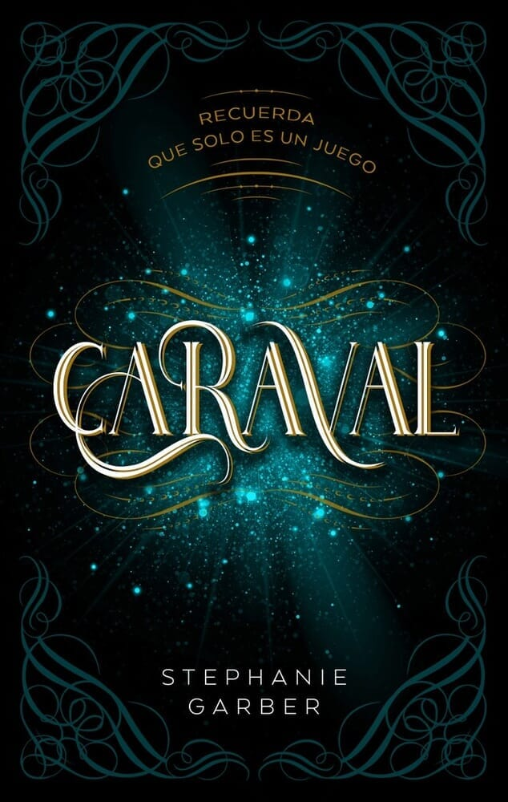
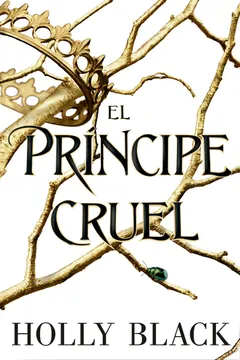
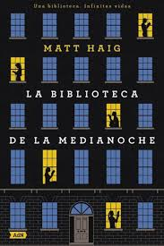
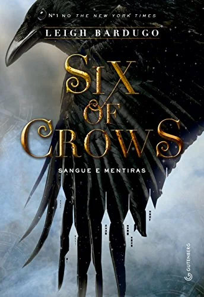
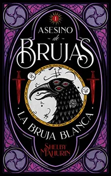
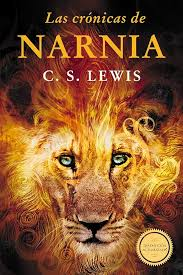
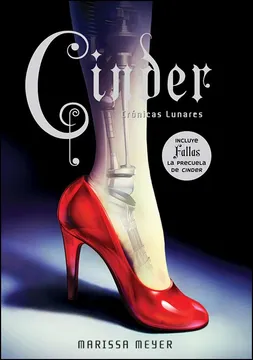
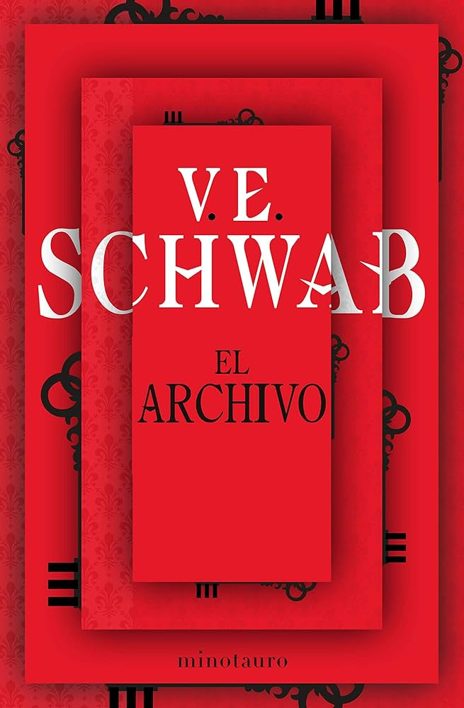

Harry Potter y el misterio del príncipe
J. K. Rowling
Mundos que todavía esperan su momento en mi biblioteca.
J. K. Rowling
Cassandra Clare
Suzanne Collins
Brandon Sanderson

Stephanie Garber

Holly Black
Stephen King

Matt Haig
Jennifer L. Armentrout
Colleen Hoover

Leigh Bardugo

Shelby Mahurin
Karen M. McManus

C. S. Lewis
Dan Wells

Marissa Meyer

V. E. Schwab
William P. Young